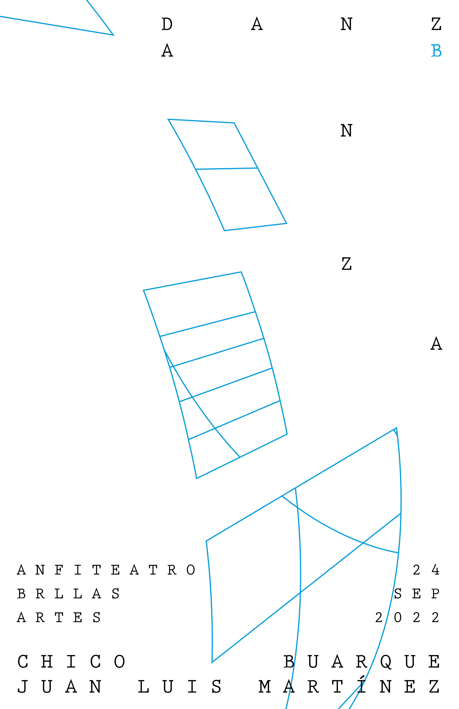
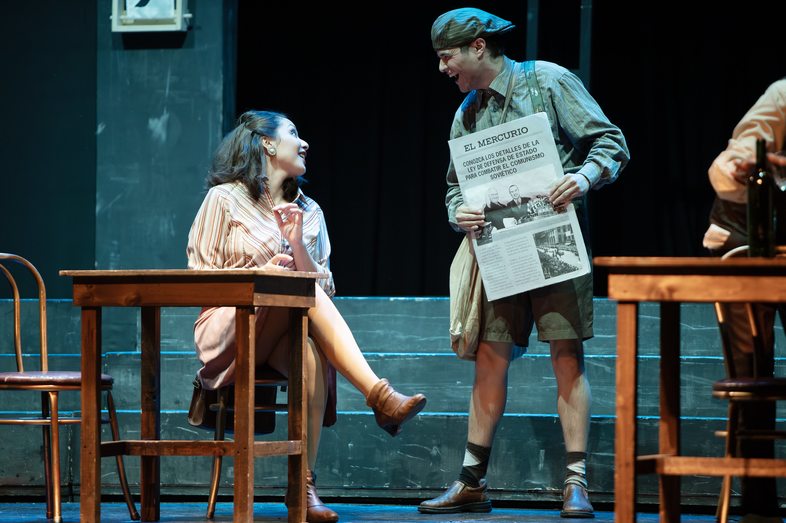
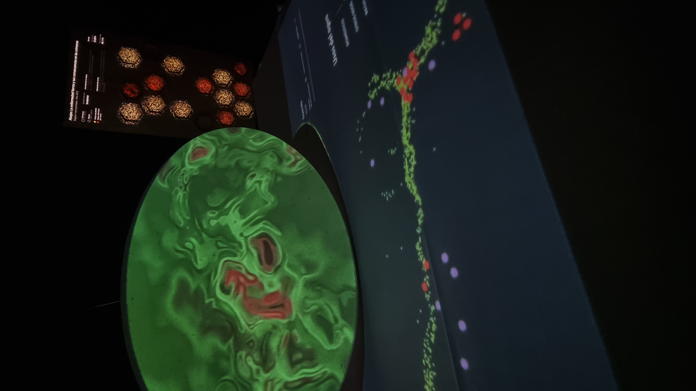
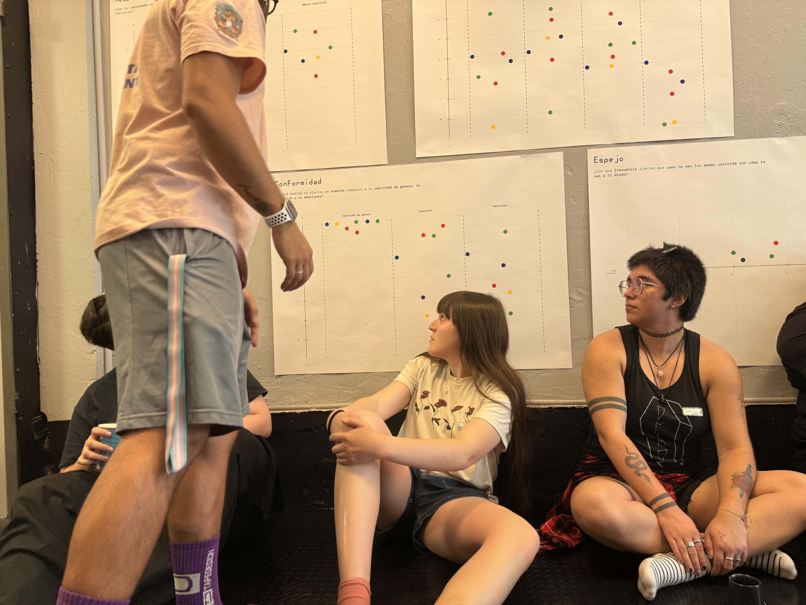

diseñadora gráfica
ux/ui | visualización de datos
me he desarrollado como un profesional empático y adaptable con una sólida base de habilidades interpersonales que facilitan la colaboración y el alto rendimiento dentro de equipos de trabajo.
a lo largo de mi trayectoria como diseñadora, he enfocado mi práctica en proyectos que buscan impactar en el bienestar de las personas mediante el desarrollo de productos y experiencias con propósito social.
me gustaría agradecer a la investigación, el análisis, la iteración y al sentido del humor por formar parte de mi manera de trabajar y me comprometo a llevar más lejos las herramientas que me entregan.




Educación
Carrera de Diseño Gráfico en Universidad Diego Portales
2021 - 2025
Antecedentes laborales
UX / UI
Me inserté en el mundo de la accesibilidad, integrando sus principios al flujo de trabajo. Mi rol se dedica desde la investigación hasta el diseño de experiencia, flujos y pantallas de productos digitales como dashboard, paneles de control y reportes de conformidad de accesibilidad.
Academia
Ayudante para la coordinación de la mención de Interacción Digital de la carrera de diseño en la UDP.
Ayudante en proyecto que busca identificar los niveles de disposición a la interdisciplina ilustrado en los programas de los cursos de diseño en la UDP.
Ayudantías
Curso de especialización dirigido a estudiantes de último año que entrega las metodologías utilizadas para el diseño de servicios centrado en las personas usuarias.
Curso del plan base de la carrera de diseño que introduce a los estudiantes a integrar herramientas de programación para el proceso de diseño
Curso de profundización interdisciplinario entre sociología y diseño para inducción al mundo de experiencia de usuario, vinculando las capacidades disciplinares de las dos carreras.
Freelance
Diseño de utilería, gráficas y dossier para la implementación y difusión de la obra del Teatro Popular de Recoleta
Diseño de gráficas para presentación del libro Querida tú, de Paulina Vergara